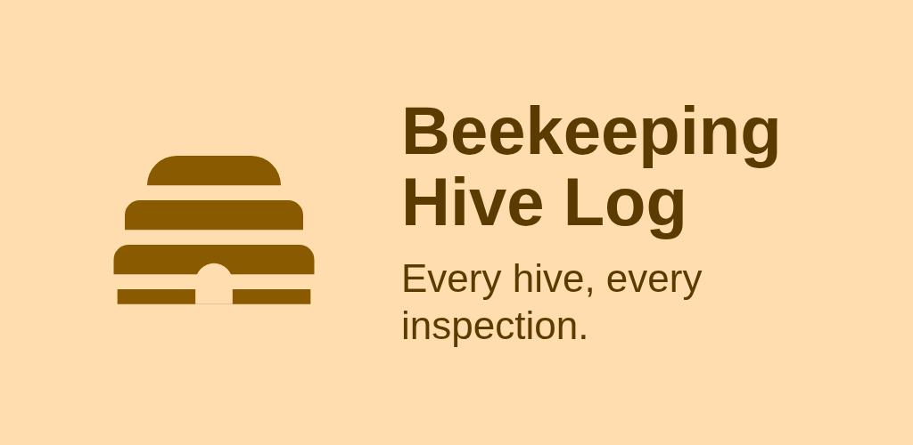
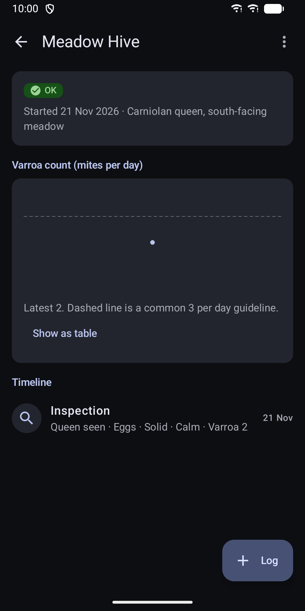
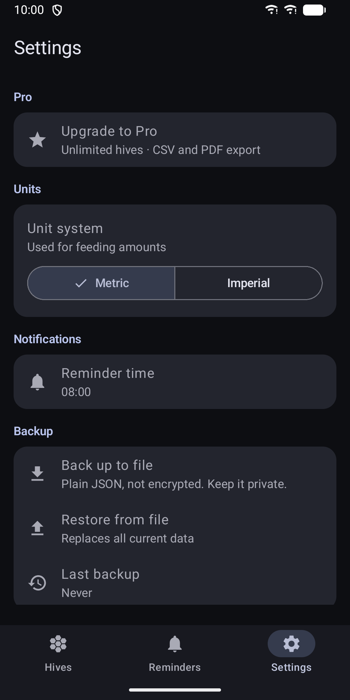
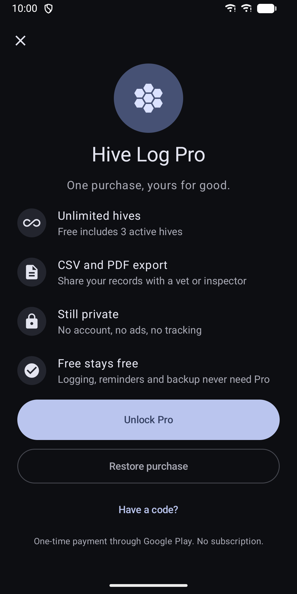

Hive Log: Diario apícola
Registra revisiones, tratamientos, alimentación y varroa de tus colmenas.







Acerca de la app
Beekeeping Hive Log es un registro sencillo de inspecciones para apicultores aficionados. Funciona sin cuenta y guarda todos tus datos en tu dispositivo. REVISIONES RÁPIDAS, TAMBIÉN CON GUANTES - Botones grandes para reina vista, huevos, patrón de cría y temperamento - Recuento opcional de varroa con botones de menos y más - Las respuestas de la última revisión ya vienen rellenadas, así que una revisión rutinaria lleva pocos toques TODO POR COLMENA - Una línea de tiempo por colmena con revisiones, tratamientos y alimentaciones - Gráfico de la evolución de varroa con una línea de referencia en 3 ácaros al día, además de un resumen en texto y una vista de tabla - Estado de cada colmena de un vistazo: correcta, necesita atención o en periodo de espera - Archiva las colmenas que ya no tienes sin perder su historial TRATAMIENTOS Y ALIMENTACIÓN - Registra tratamientos con periodo de espera. La app muestra un aviso hasta que termina y puede recordártelo en la fecha final. Nunca te bloquea. - Registra alimentaciones: jarabe 1:1, jarabe 2:1, fondant o torta de polen - Unidades métricas o imperiales RECORDATORIOS - Recordatorios únicos o que se repiten cada N días - Notificaciones a la hora que elijas, por defecto a las 08:00 - Widget para la pantalla de inicio con tus próximos recordatorios y las colmenas que necesitan atención TUS DATOS SE QUEDAN EN TU DISPOSITIVO - La app no tiene permiso de internet y no envía nada a ningún sitio - Sin cuenta y sin analítica - Copia de seguridad y restauración en un archivo que tú eliges. La copia es JSON sin cifrar, así que guárdala en un lugar privado. PARA CADA PANTALLA - Móviles y tabletas, con lista y detalle lado a lado en pantallas grandes - El tema claro y oscuro sigue la configuración del sistema - Etiquetas para lectores de pantalla, zonas táctiles grandes y compatibilidad con alto contraste GRATIS Y PRO Incluido sin compra: hasta 3 colmenas activas, todos los registros, los recordatorios, el widget y la copia de seguridad. Las colmenas archivadas no cuentan. Pro es un pago único a través de Google Play, no una suscripción. Desbloquea colmenas ilimitadas y la exportación a CSV y PDF para compartir con un veterinario o inspector. La línea de referencia de varroa es solo una guía visual, no un consejo de tratamiento. Sigue la normativa local y las etiquetas de los productos para los tratamientos y los periodos de espera.